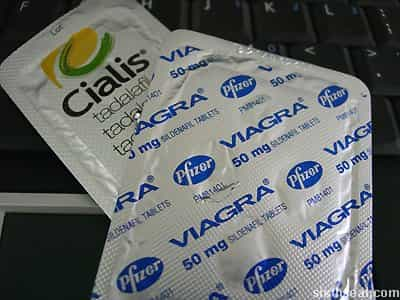
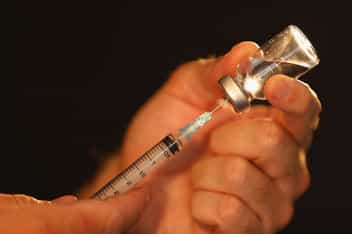
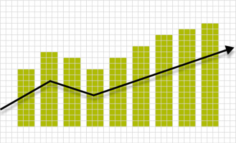

< < < Back
My Personal Experience With Nootropics In The Gym And In The Bedroom – Return Of Kings
Disclaimer: This article is not, nor is intended to serve as medical advice. Always consult with a licensed physician before starting a regimen of any kind.
A few months ago I decided to start experimenting with various performance enhancing drugs. I’m in my best physical shape since my mid-twenties but the older I get the more difficult it becomes to maintain an elite physique. Plus, I’m always looking to gain an edge and improve myself physically and mentally as every man should anyway.
After extensive research, consultation with my doctor, and self-experimentation, I’ve dialed in my regimen to the point where I’m operating at peak physical efficiency much more often than not.
Below are my personal anecdotes on the four performance enhancing substances I’ve decided to make a part of my bi-weekly regimen. I’ll discuss how they affect me socially, in the gym, at the desk, in the bedroom, and other areas of my daily life.
Kratom

I’ve stated in previous articles that I learn just as much on this site as any of our readers, so when I saw a couple of sponsored posts about the benefits of Kratom, I decided to give it a try and so far I’ve been pleased with the results.
In the gym: On days I lift (Mondays, Wednesdays, and Fridays) I take faster strains to give me a burst of energy. About a half hour after I burn 2 or 3 ounces, there is a rush of strong, clean energy and razor sharp focus and motivation that makes me feel like I can squat 700 lbs.
Kratom doesn’t increase my strength under the bar but I can certainly feel a difference in the way I perform each rep. The concentration and focus I get from Kratom improves my form (which is absolutely critical when lifting heavy) and allows me to get through my workout a little quicker saving me time, which is an increasingly dwindling commodity for me these days.
Socially: Regardless of the strain I take, Kratom improves my mood exponentially. I’m happier, have an increased sense of well being, and have an insatiable desire to talk to people and approach women like crazy.
The bottom line, socially, is that Kratom makes me very happy. Not a loopy, “I’m drunk as fuck dude!” type happy but a genuine elevated contentment that puts me in an awesome mood. As stated above, the strain never matters. Fast, slow, and everything in between puts me in a good mood.
Negatives: It’s easy to build a tolerance on Kratom if you don’t rotate strains properly. The higher your tolerance the more you have to take which can result in nausea. I made this mistake when I first started but have since corrected it.
Overall, I only take Kratom when I wake up and I’m not feeling my best or not quite as motivated to lift. It tends to work best for me in a fasted state (when I haven’t eaten in 8 hours or more). Every so often I take it when I feel crappy or just need a short burst of energy to complete a task.
Modafinil

Modafinil is mainly used for concentration and mental stamina. I mainly use it when I have a project (or an article) that needs to be completed in 24 hours or less.
In the gym: I experimented with it in the gym and to my surprise it didn’t help much. It actually had the opposite as my mind was all over the place during my workout, which extended it by about a half an hour. Needless to say that was the first and last time I took it before lifting.
Socially: When I take Modafinil, and I’m around people or other distractions, I can rarely focus on one thing at a time. Because of this, I have zero interest in socializing, approaching, etc. If you’re thinking about trying Modafinil to get over approach anxiety I would strongly advise against it.
Productivity: This is where Modafinil shines. It doesn’t take long after I take it that I get that tunnel vision and can mow through the task at hand. This drug allows me to crank out just about anything with minimal distractions, breaks, or anything that diverts my attention from my objective.
Most articles I write for ROK take anywhere between three and five days to complete. But sometimes my week is busy and I fall behind schedule. That’s where Modafinil helps out. I’ve cranked out a few posts from start to finish in just a couple of short hours to make my weekly deadline including this one.
All in all, Modafinil is a one-trick pony, but that trick makes it well worth a try at least once. The focus is there so long as you’re isolated. If you’re in a social setting or around people when trying to get something done, your mind will be all over the place.
Winston experienced a few minor side effects when he tried it but I have yet to see any of these myself. Everyone’s different.
If you’ve got a long day ahead of you or a project(s) that need be completed, Modafinil will definitely help you git ‘er done.
Viagra & Cialis

During the steroid inquiries of the mid 2000s, some of the suppliers revealed that their clients were also using Viagra (referred to as “vitamin V”) as a part of the supplemental regimen to improve their performances on the diamond, so I decided to experiment with this myself to see if it yielded any results in my own training.
In the gym: Like the Kratom, Viagra didn’t necessarily increase my strength or flexibility. I did, however, notice a decrease in soreness the next day. I tried this on three separate occasions, alternating Mondays for six weeks and found that I was always a little more sore on the Tuesdays I didn’t take the little blue pill the day before.
Cialis didn’t make a difference at all, and it’s likely because it’s a slow release drug as opposed to the much more immediate effect Viagra has. These days, however, I stack it with L-argenine to increase blood circulation which helps a variety of bodily functions.
In the bedroom: No need to elaborate on this too much as must of us here are well aware of the effects these drugs have on our pussy pounding conquests. In short, they both work, and work well. End of story.
Viagra and Cialis have a few different uses, and like I said before it will affect different men in different ways. Some men report that it does increase one’s strength in the weight room, some state that it helps recovery, and others men report different but minor effects.
Testosterone

The benefits of Testosterone Replacement Therapy are well documented. Here and here are two good places to start your research if you’re thinking of starting TRT.
Like I said before I’m already in great physical shape, but at 37 years of age, the ol’ motor isn’t what it used to be. Between my bad left knee and nagging shoulder injury from about a decade ago, my injuries sometimes hamper my progress and sideline me for a day or two.
Before I started TRT 3 months ago I was 220 lbs and about 15% body fat. Pretty solid physique for a guy who stands at 6′ 1″. Since then I’ve dropped 7 lbs and I’m down to around 12% body fat. I’m as close to being “shredded” as I’ve ever been in my life and there’s no doubt in my mind that in 3 months I will be.
In the gym: This is the area I’ve noticed the biggest difference. While testosterone doesn’t personally make me stronger, it helps me to recover much more quickly and has drastically reduced the pain in my left knee and my shoulder, which has allowed me to increase the weight in my compound lifts.
Two other huge benefits I’ve noticed is 1) it helps me to keep the muscle I build through lifting without cutting back on my cardio (I bike mountain trails three to four times a week) and 2) it gives me a little more leeway in my diet, allowing me to consume a few more (healthy) carbs on my biking days and still keep my hard-earned muscle on my frame where it belongs.
TRT has quite literally turned back the clock for me. Not only do I look better, but I also feel better, which is the main reason I decided to do it in the first place. In my mind a great physique is only worth it if it serves a practical purpose other than picking up chicks. What good is an athletic looking body if you can’t physically do anything with it if you’re sore or hurting all the time?
Testosterone is definitely as advertised, and I would highly recommend that every man talk to their doctor about drinking from the fountain of youth. I’m a cash customer and aside from the initial blood tests (which cost around $350) I paid $77 for a four month supply of testosterone, syringes, and alcohol pads. If you have medical insurance it will be even less expensive.
My personal schedule

Though each of these substances are beneficial, I also realize this is a lot of substances to be putting into my body on a regular basis. Because of this I’m very careful with my dosing and use a chart in order to keep my tolerance low and to avoid a dependence or addiction to them.
The schedule below accomplishes this and allows me to benefit from each of these drugs:
Testosterone: I give myself a 160 mg shot every other Sunday.
Kratom: I take fast strains on Mondays, Wednesdays, and Fridays (my lifting days) one week, then take an ECA stack on alternating weeks. Again, this helps to decrease tolerance and dependence on either of these substances.
Modafinil: I take this once a week on either a Saturday or Sunday. I tried Saturday and Sunday and noticed a sharp decrease in effectiveness on Sunday (read: the second of consecutive days). I build a tolerance to this quite easily so I’m extremely wary of my dosages.
Viagra/Cialis: I take 2.5 mg of Cialis every day along with L-Arginine to increase and improve my blood circulation. The ability to bang the brains out of chicks with a rock hard boner for an extended period of time is also a welcome “side effect” to this daily procedure.
Conclusion
I used to be in the “age gracefully and naturally” camp until I took it upon myself to become educated in the use of performance enhancing substances. Father time is undefeated, but that doesn’t mean we can’t delay his inevitable victory and extend our physical primes by a few years.

Every man wants to be more productive, mentally sharper, fuck better, feel better, and reach his genetic potential and I’m certainly no different. I’ve found the combination that has accomplished all of these things for me. If you’re looking to improve your life in these ways, take action, start doing research, and talk to your doctor.
You’re welcome.
Read Next: How To Obtain And Use Testosterone For Male Birth Control